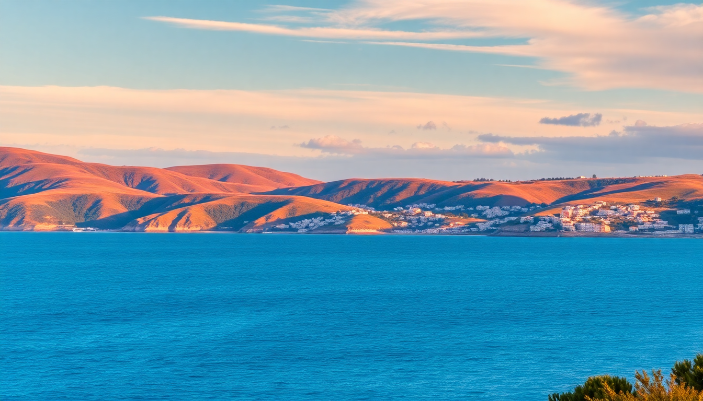

Best Beaches in Norway: Coastal Gems from South to North

I spent three weeks chasing the Norwegian coast last July, and I’ll be honest: I packed a wetsuit expecting arctic misery. What I found instead were white-sand coves in the south, pebble bays in the fjords, and a few places in the north where the water was actually swimmable — if you’re stubborn enough. Here’s the no-fluff breakdown of where to go, what to bring, and which beaches are worth the detour.
What are the best beaches near Kristiansand?
Kristiansand is the warmest spot in Norway for a reason. The Skagerrak coast here has actual sandy beaches, not just rocky outcrops. We spent two days at Bystranda, the city beach right next to the cruise terminal. It’s man-made but clean, with a long wooden pier and lifeguards in July. The water hit 18°C when we were there — warm by Norwegian standards.
For something wilder, drive 20 minutes east to Hamresanden. It’s a 2-km stretch of fine sand backed by dunes, with a shallow gradient that makes it safe for kids. We parked at the Hamresanden Camping lot (50 NOK for the day) and walked straight onto the beach. No crowds on a Tuesday in July.
- Bystranda — city beach, free entry, showers and cafes nearby
- Hamresanden — family-friendly, dunes, shallow water
- Sømsstranda — quieter option with a small kiosk selling waffles
- Farvannet — tidal pools to explore at low tide
Where should I swim near Stavanger?
Stavanger’s beaches are rockier and more exposed, but the Lysefjord area has hidden gems. Sola Beach is the default — a 3-km stretch of sand right next to Sola Airport. The wind can be brutal, but on a calm day the water is clear and cold (15°C in August). We rented a SUP from Sola Strandhotell for 200 NOK per hour.
Skip Vågen inside the city — it’s a harbor beach with murky water and boat traffic. Instead, take the 20-minute ferry to Tau and hike to Jørpelandsholmen, a tiny island with a pebble beach and a natural diving platform. Bring your own lunch; there’s nothing there but rocks and sheep.
- Sola Beach — long, sandy, windy; best for kite surfers
- Jørpelandsholmen — quiet island beach, requires ferry + short hike
- Ølbergstranden — sheltered cove with a grassy picnic area
- Hellestø — wild beach with driftwood and no facilities
Can you actually swim in the Lofoten Islands?
Yes, but it’s a commitment. Lofoten beaches are dramatic — white sand against turquoise water that’s 12°C in July. We swam at Haukland Beach near Leknes, and the shock of the cold was real. The trick is to go at low tide when the shallow pools warm up slightly. We saw locals in wetsuits surfing the break at Unstad Beach, which has a dedicated surf school called Unstad Arctic Surf.
Ramberg Beach is the most accessible — right off the E10 road with a parking lot and a toilet block. The sand is pinkish granite, not tropical white, but the mountain backdrop makes up for it. We stayed at Ramberg Gjestegård and walked to the beach in five minutes. For solitude, hike 30 minutes to Kvalvika Beach — it’s surrounded by cliffs and has no road access, so you’ll have the place to yourself.
- Haukland Beach — postcard-perfect, shallow entry, popular with photographers
- Unstad Beach — surf spot, wetsuit rental available
- Ramberg Beach — easy access, pink sand, good for sunset
- Kvalvika Beach — remote, requires a hike, no facilities
What beaches near Tromsø are worth the trip?
Tromsø is not a beach destination — the water is 8°C even in August. But the coastal scenery is stunning, and there are a few places where you can dip your toes without regret. Telegrafbukta is the city beach, a grassy park with a small pebble shore. We saw locals having picnics and one guy actually swimming. He was wearing a neoprene cap and gloves.
For a proper beach experience, drive 45 minutes south to Sommarøy, a fishing village on a white-sand island. The water is shallow and surprisingly clear, and the Sommarøy Arctic Hotel has a sauna right on the beach — jump in the sea, then warm up in the wood-fired barrel. We did three rounds of this and felt invincible.
- Telegrafbukta — urban beach, picnic-friendly, free parking nearby
- Sommarøy — white sand, sauna access, 45-minute drive from Tromsø
- Kvaløya — several small coves along the road; pull over anywhere
- Grøtfjord — remote beach with a mountain backdrop, 30 minutes north
When is the best time to visit Norwegian beaches?
July and August are the only months that make sense for swimming. June can still be cold (10–12°C water), and by September the wind picks up. We hit the sweet spot in mid-July: 20°C air, 16°C water in the south, and 22 hours of daylight in the north. The downside? Mosquitoes in the Lofoten valleys. Bring repellent.
If you’re not swimming, May and September are fine for walking and photography. The midnight sun runs from late May to mid-July in the north, so you can beach-hop at 11 PM without a flashlight.
- July–August — warmest water, peak season, book accommodation early
- May–June — fewer crowds, colder water, wildflowers on the dunes
- September — autumn colors, empty beaches, wetsuit required
What should I pack for a beach day in Norway?
A wetsuit is non-negotiable if you plan to swim in the north. I used a 3/2 mm shorty in Kristiansand and a full 5/4 mm in Lofoten. A windproof jacket is more useful than a towel — the wind chill after swimming is brutal. We also carried a thermos of hot chocolate and a change of shoes (sandals get useless on pebble beaches).
Most beaches have no facilities. Hamresanden has a kiosk, but Haukland and Kvalvika have nothing. Pack your own food, water, and a trash bag. The Leave No Trace ethic is strong here, and fines for littering start at 5000 NOK.
- Wetsuit (3/2 mm for south, 5/4 mm for north)
- Windproof jacket and fleece
- Water shoes (pebble beaches shred bare feet)
- Thermos with hot drink
- Dry bag for phone and keys
FAQ
Can I camp on Norwegian beaches? Yes, under the allemannsrett (right to roam), you can pitch a tent on any uncultivated land for one night, including most beaches. Keep 150 meters away from houses. We camped at Kvalvika Beach in Lofoten — no fires allowed, but the stars were incredible.
Are Norwegian beaches crowded? Only in Kristiansand on weekends. Bystranda gets packed when the cruise ships dock. Lofoten beaches have a steady stream of tourists in July, but you can always find a quiet spot by walking 10 minutes from the parking lot. Tromsø beaches are empty — locals don’t consider them beaches.
Do I need a car to reach these beaches? For most, yes. Kristiansand’s Bystranda is walkable from the city center, and Tromsø’s Telegrafbukta is a 20-minute bus ride (#28). But Haukland, Ramberg, and Sommarøy all require a car. Rental prices in Lofoten spike in July — book through Sixt or Hertz at Leknes Airport three months ahead.
Conclusion
- Kristiansand has the warmest water and real sand — stick to Bystranda or Hamresanden for a classic beach day.
- Stavanger’s Sola Beach is good for wind sports, but the Lysefjord coves are quieter and more scenic.
- Lofoten beaches are cold but stunning — Haukland and Ramberg are the easiest, Kvalvika is the most rewarding.
- Tromsø is not for swimming, but Sommarøy’s sauna-to-sea ritual is worth the drive.
- Pack a wetsuit, windproof layers, and your own snacks — most beaches have zero facilities.